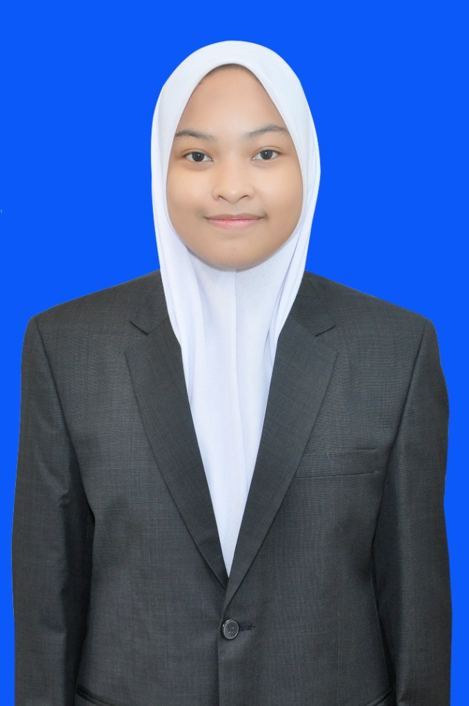

01C++
Queue & OOP C++
Implementasi struktur data queue dan konsep OOP dalam project pemrograman.
Halo, saya
Saya mahasiswa S1 Teknik Komputer JTIK Universitas Negeri Makassar yang tertarik pada programming, UI/UX, desain grafis, dan public speaking.

Beberapa project, desain, dan pencapaian yang menjadi bagian dari perjalanan saya.
Implementasi struktur data queue dan konsep OOP dalam project pemrograman.
Aplikasi kasir berbasis PHP & MySQL dengan antarmuka HTML/CSS.
Eksplorasi desain interface mobile dan pengalaman pengguna menggunakan Figma.
Karya desain logo yang mengantarkan saya meraih Juara 3 pada 2022.
Prestasi dalam kompetisi Cerdas Cermat Matematika pada 2022.
Pengalaman kompetisi debat yang melatih komunikasi dan public speaking.
Lihat perjalanan pendidikan, organisasi, prestasi, dan target saya ke depan.
Kenali Saya Lebih Jauh ↗Beberapa dokumentasi karya desain, pengalaman organisasi, dan prestasi yang melengkapi perjalanan saya.
Eksplorasi desain pertama menggunakan CorelDRAW.
Rancangan antarmuka Pinterest mobile.
Periode 2024–2025 di SMKN 7 Makassar.
Prestasi lomba Cerdas Cermat Matematika.
Dokumentasi pencapaian lomba desain logo.
Karya yang mengantarkan saya meraih Juara 3 desain logo.
Pengalaman berkompetisi dan mengembangkan kemampuan public speaking.